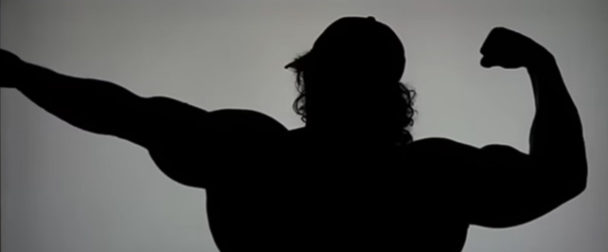
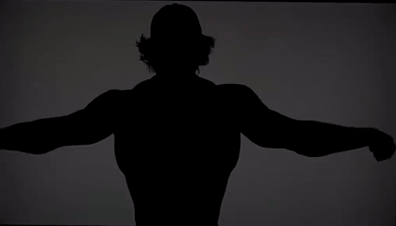

 
Practicamente somos ustedes, la comunidad, dando consejos o tips en base a nuestra experiencia, lo que hemos aprendido y aplicado a nuestros entrenamientos para hacerlos mas eficientes para nosotros.
Esta seccion es especifica para un bonus y algunos tips que deben ser tomados en cuenta y otros que pueden serlo.